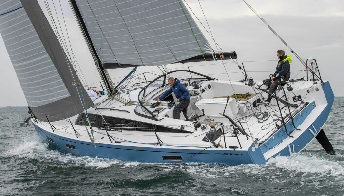
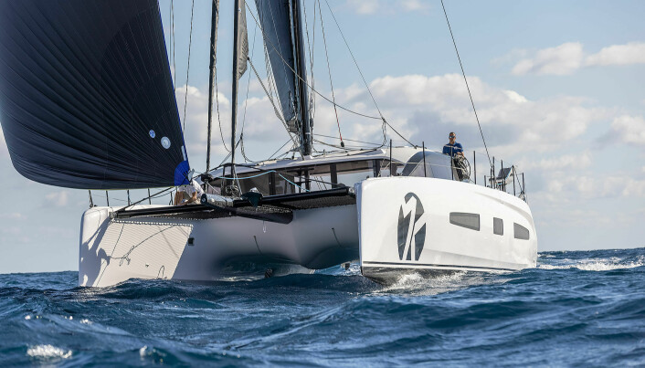

Realiser båtdrømmen
Dagen i dag kan være den første dagen i ditt nye båtliv!
Vi seiler fra øy til fjell for å oppleve, se og lære. Vi leker oss i vinden, i vannet, på fjorden, i skjærgården, og i høyden i fjellene. Vi kombinerer seiling med fjell- og toppturer, kajakkpadling, fiske, musikk, mat, festivaler, skikjøring, brevandring og mye mer!
Nyheter
Årets fem beste seilbåter
Beste familieturseiler: Hanse 460
Hanse 460 imponerer både under seil, og under dekk, og viser at og viser at verftet har tatt riktige valg. Verftet byr må svært mange valgmuligheter, og er en egnet båt for slik de fleste familier vil tilbringe feriedager til sjøs.
Modellen vil nok også bli populær i chartermarkedet, og med fem lugarer presse prisen ned på utleiemarkedet også.
–Med bistand fra designer Berret/Racoupeau bringer Hanse Yachts fransk blod inn i deres DNA. Dette vises tydelig ettersom 460 har mer innovasjon, inkludert moderne skroglinjer, et lavt dekk og en cockpit-layout som gir mye plass for familie og venner å slappe av og nyte. Under dekk føler du deg velkommen i den dype og brede salongen hvor sollyset fyller inn fra skrogvinduene og ovenfra.
Morten Brandt-Rasmussen, Bådmagasinet, Danmark
–460 er en gamechanger i Hanse-serien. Den første modellen fra de franske designerne Berret/Racoupeau har et supermoderne skrog, ser mer ut som en racer enn en cruisingyacht, overbeviser i lett og sterk vind og byr på god plass.
Roland Duller, YachtRevue, Østerike
Sun Odyssey 380 ble kåret som vinner av SEILmagasinets lesere.
Nominerte båter: Neel 43, Dufour 470, Oceanis 34, og Sun Odyssey 380

Beste luksuriøse seilbåt: Hallberg-Rassy 50
Det meste stemmer for nykommeren fra Ellös, flytende luksus som fungere i alt av vær. Det er synd kvalitet koster så mye.
Jeg var heldig å få seile båten i sol, varme og lett vind i Frankrike, men også under hardt vær i vinterkulde i Sverige. En god turseiler skal fungere under alle forhold, og det gjør Hallberg-Rassys nye 50-foter. De har klart å skape en moderne båt, uten å gi slipp på velfungerende løsninger.
– Å, for en glede! Ett førsteklasses hotell av typen yacht som gir i lett bris. Den genererer ganske enkelt sin egen vind. Med sin 25 meter høye rullemast i karbon og et sett med fine Epex-seil, inkludert en fantastisk Code på rull, fortsatte Hallberg-Rassy 50 å bevege seg på den glassaktige Biscaya utenfor La Rochelle når andre allerede stoppet. Mens hennes hardvindsegenskaper var som forventet, var hennes egenskaper i lett vind en av flere wow-effekter det tyske Frers-designet fremkalte. Storslåtte skroglinjer, god ergonomi, romslige lugarer og den bunnsolide svenske byggekvaliteten kombineres til noe universelt flott. Uansett hvor du vil seile – HR 50 vil passe perfekt.
Jochen Rieker, Yacht, Tyskland
– Så mye plass i dette skroget designet av Germán Frers. Magnus Rassy ønsket dessuten at interiøret skulle være på samme nivå fra eierlugaren bak til forpiggen, slik at du ikke engang trenger å bry deg om noen skritt når du beveger deg. Sammenlignet med det som ble gjort på tidligere modeller, er masten litt flyttet bakover, slik at salongen kan bli enda bredere. Vi likte selvfølgelig det fine treverket overalt, men vi setter også pris på det store kartbordet. På dekk finner du to ratt (akkurat som på Hallberg-Rassy 57). Og den nye 50 trenger ikke mye vind for å nå 7 eller 8 knop.
Loic Madeline, Voiles & Voiliers, Frankrike
Hallberg-Rassy 50 ble også kåret som vinner av SEILmagasinets lesere.
Nominerte båter: Lagoon 55, Jeanneau Yacht 60, Swan 58, X5.6
Beste Performance Cruiser: JPK 39 Fast Cruiser
En rask turseiler er en balanse mellom en rekke faktorer. JPK har lykkes å skape en båt som seiler vanvittig bra, og samtidig er moderne og komfortabel.
Om du tar det beste fra RM, X-Yachts og Pogo, så får du noe som er lik JPK 39FC. Båten krysser nesten like bra som en X-Yachts, den har et overbygg og interiør som en RM, og planer nesten som en Pogo. Dette er en meget sprek turseiler med mye tau i cockpiten og rorkult, en båt skapt for å bli seilt solo.
– JPK bygger båter som vinner trofeer! Sammen med Pogo har den redefinert hva en moderne ytelsescruiser skal være: effektiv til maks. For den ivrige seileren som ønsker å få mest mulig glede ut av hands-on cruising, er JPK 39 et ypperlig design (og for mitt øye en tiltalende en også), mens verftet har gjort en god jobb med interiøret- ut også.
Toby Hodges, Yachting World, UK
JPK 39FC oppfører seg som en vanlig yacht, men har potensialet til å seile veldig fort – til og med fly. Fast cruisier – hvilket navn. Slike egenskaper innebærer vanligvis en mangel på komfort, men ikke her. Den kan vær ekstremt rask hvis du vil at den skal være, egnet for shorthandedseiling, men inneholder også alle grunnleggende cruisebehov, samtidig som den opprettholder en høy byggekvalitet.
Marinus van Sijdenborgh de Jong, Zeilen, Nederland
JPK 39 FC ble også kåret som vinner av SEILmagasinets lesere.
Nominerte båter: J/45, Pogo 44, Solaris 40 og IC 36
Beste langturbåt: Outremer 55
Vil du seile raskt og komfortabelt rundt jorda, med minimalt av miljøavtrykk, så ta en titt på Outremer 55, om du har råd.
Den nye 55-foteren er full av nye ideer. Den byr også på mer komfort og mer luksus, men allikevel klart å holde vekten nede.
Katamaranen er utviklet for langtur, med en miljøtanke. Den skal seile bra også i lett vind, og derfor bruke mindre diesel. Det skal heller ikke være nødvendig med generator på grunn av mye solceller. Aircondition er også unødvendig takket være gode luftemuligheter.
– Et betryggende eksempel på hvordan man designer og bygger en katamaran for langtur. Slanke skrog og mye duk vil får katamaranen i mål raskt nok. Gjennomtenkt ergonomi vil holde mannskapet trygt og sunt, og rikelig med loungeområder inne og ute vil tjene alles behov for privatliv og sosialt samvær etter eget valg.
Pasi Nuutinen, Vene, Finland
–Outremer har vært kjent i flere tiår for sine høykvalitets katamaraner for langtur brukt av seilere rundt omkring i verden. Den nye 55 har noen spesielt interessante og innovative funksjoner som de doble ratt justerbare i fire posisjoner. Inntrykket bak rattet er ikke annet enn flott, i det minste for å være på en katamaran – responsiv og samtidig med en fingertuppfølelse.
Joakim Hermansson, Praktisk Båtägande, Sverige
Ovni 370 ble kåret som vinner av SEILmagasinets lesere i denne kategorien.
Nominerte båter: Ovni 370, Allures 51.9, Windelo 50

Beste spesielle seilbåt: Saffier SE 33 Life
Saffier 33 Life er en oppsiktsvekkende kul båt. Morsom er den også å seile. 33-foteren er hverken billig eller praktisk, men har en velfungerende cockpit og seiler som en drøm. Dette er en båt som appeller mer til følelsene enn til fornuften. En båt som kan gi deg en god følelse av livet.
– Rykte om at Saffier bygger raske og flotte yachter har spredt seg over hele Europa. Og til tross for høye forventninger klarer den nye SE 33 Life å overraske i positiv forstand: utmerkede seilingsegenskaper, en perfekt dekklayout, problemfri håndtering og fine tilbakemeldinger ved roret. Du kan egentlig ikke be om mer fra en dagsailer. Gode ideer under dekk fullfører den harmoniske helhetspakken.
Lori Schüpbach, Marina.CH, Sveits
–Hver modell fra det nederlandske verftet er bedre enn den forrige, og den nye 33-foteren er intet unntak. En nytelse å seile, vakker å se på og upåklagelig bygget. En dagseiler som er en hymne ikke bare til livet, men også til gleden ved å seile. Du ser på den og vil umiddelbart seile den, uansett om du er alene eller med venner. Det raffinerte designet og vakuumkonstruksjonen gir et lett og raskt skrog.
Alberto Mariotti, Vela e Motore, Italia
Saffier ble også kåret som vinner av SEILmagasinets lesere.